MANTENIMIENTO DE COMPUTADORAS
MANTENIMIENTO DE COMPUTADORAS
el mantenimiento de computadores puedes realizarlo periódicamente en todo equipo de cómputo que tengas en uso Ciertamente, con el fin de prevenir fallas o reparaciones costosas que puedan afectar el rendimiento y funcionamiento correcto de tus equipos, realiza el mantenimiento periódico Entonces, si tu computador lleva más de seis meses sin recibir mantenimiento preventivo o quieres conocer el estado de tu equipo; Programa el mantenimiento de computadores en Bogotá y asegura la continuidad de tu negocio o actividades.


El mantenimiento es el procedimiento por el cual se trata un bien determinado
de manera que el paso del tiempo, el uso o el cambio de circunstancias externas no lo afecten.
Hay muchos campos en los que se puede aplicar el término, ya sea para bienes físicos o virtuales.
Así, es posible referirse al mantenimiento de una casa, una obra de arte, un vehículo, un programa o
conjunto de programas, un sistema, etc.
OBJETIVO DEL MANTENIMIENTO
El mantenimiento se define como el conjunto de actividades que intentan compensar
la degradación causada por el tiempo y el uso en equipos e instalaciones. Los departamentos
de mantenimiento, teniendo en cuenta esta definición, intentan asegurar cuatro objetivos básicos:
disponibilidad, fiabilidad, vida útil y coste.
*Asegurar una larga vida útil de la instalación en su conjunto,
al menos de acuerdo con el período de amortización de la planta.
*Lograr todo esto dentro de un presupuesto determinado,
generalmente el presupuesto de mantenimiento óptimo para esa instalación.
CONOCER MAS
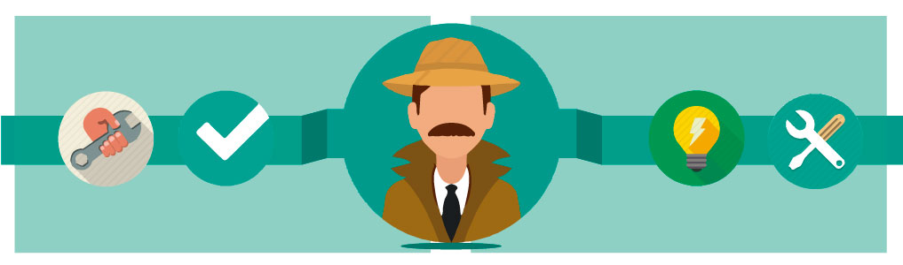
TIPOS DE MANTENIMIENTOS

Tradicionalmente, se han distinguido 5 tipos de mantenimiento,
que se diferencian entre sí por el carácter de las tareas que incluyen:
Mantenimiento Correctivo: Es el conjunto de tareas destinadas a corregir los defectos que se van
presentando en los distintos equipos y que son comunicados al departamento de mantenimiento por los usuarios de los mismos.
Mantenimiento Preventivo: Es el mantenimiento que tiene por misión mantener un nivel de servicio determinado en los equipos,
programando las intervencions de sus puntos vulnerables en el momento más oportuno.
Suele tener un carácter sistemático, es decir, se interviene aunque el equipo no haya dado ningún síntoma de tener un problema.
En este video te explicamos
Mantenimiento Predictivo: Es el que persigue conocer e informar permanentemente del estado y operatividad de las instalaciones mediante el conocimiento de los valores
de determinadas variables, representativas de tal estado y operatividad. Para aplicar este mantenimiento, es necesario
identificar variables físicas (temperatura, vibración, consumo de energía, etc.) cuya variación sea indicativa de problemas
que puedan estar apareciendo en el equipo. Es el tipo de mantenimiento más tecnológico, pues requiere de medios técnicos avanzados, y en ocasiones,
de fuertes conocimientos matemáticos, físicos y/o técnicos.
Mantenimiento Cero Horas (Overhaul): Es el conjunto de tareas cuyo objetivo es revisar los equipos a intervalos programados bien antes
de que aparezca ningún fallo, bien cuando la fiabilidad del equipo ha disminuido apreciablemente de manera que resulta arriesgado hacer previsiones sobre su
capacidad productiva. Dicha revisión consiste en dejar el equipo a Cero horas de funcionamiento, es decir, como si el equipo fuera nuevo. En estas revisiones
se sustituyen o se reparan todos los elementos sometidos a desgaste. Se pretende asegurar, con gran probabilidad un tiempo de buen funcionamiento fijado de antemano.
Mantenimiento En Uso: es el mantenimiento básico de un equipo realizado por los usuarios del mismo.
Consiste en una serie de tareas elementales (tomas de datos, inspecciones visuales, limpieza, lubricación,
reapriete de tornillos) para las que no es necesario una gran formación, sino tal solo un entrenamiento breve.
Este tipo de mantenimiento es la base del TPM (Total Productive Maintenance, Mantenimiento Productivo Total).
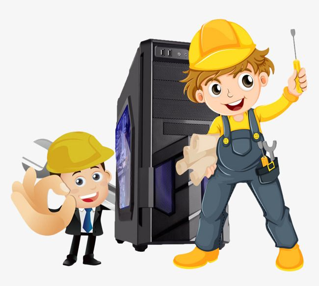

LA IMPORTANCIA DEL MANTENIMIENTO DEL COMPUTADOR
Por que es importante darle mantenimiento a la computadora
Un computador debe cuidarse y mantenerse para prevenir problemas.
En un computador hay dos cosas que deben cuidarse: el hardware (la parte física) y el software
(los programas y la información que contiene). Se entiende por mantenimiento del computador al conjunto de acciones
que deben realizarse periódicamente para mantener al computador en óptimo estado de funcionamiento.
Mantenimiento del hardware
En general, para un buen funcionamiento del equipo se requiere
ciertas condiciones ambientales que deben ser controladas.
Así, el computador nunca puede estar expuesto al agua ni a una humedad excesiva.
Hay que cuidarlo de las temperaturas altas y de la incidencia en
él de la luz del sol de forma directa.

Mantenimiento del software
Para mantener limpio el hardware de tu computadora,
en lo que se refiere al software tendrás que tener mucho cuidado cuando descargues
o instales algún archivo o programa, ya que pueden entrar muchos virus en tu ordenador.
Para este fin, es bueno que tengas
instalado un potente antivirus.
Por su parte, las actualizaciones del sistema operativo, tanto automáticas
como manuales, son también muy importantes. Protegen al equipo de múltiples amenazas.
Es por ello que es tan necesario permitir que se ejecuten las actualizaciones automáticas
como acceder regularmente a los desarrolladores del software para verificar la existencia de actualizaciones
y nuevas versiones a disposición de los usuarios.

El mantenimiento de una computadora de oficina es muy diferente a la del hogar, pero debemos tener en cuenta ciertas cosas:
1 Lo aconsejable es que el mantenimiento se haga dos veces por año (cada 6 meses).
2 El polvo es el enemigo número uno de la computadora.
3 No exponer el ordenador a rayos de sol o lugares húmedos.
4 Revisar las respectivas conexiones eléctricas.
5 Apagar el computador cuando ya no se esté usando.
6 Limpieza de ventiladores y componentes internos.
7 Limpieza de programas o archivos no deseados.
8 Usar un anti-virus legal y vigente.
¿Por qué debe limpiarse?
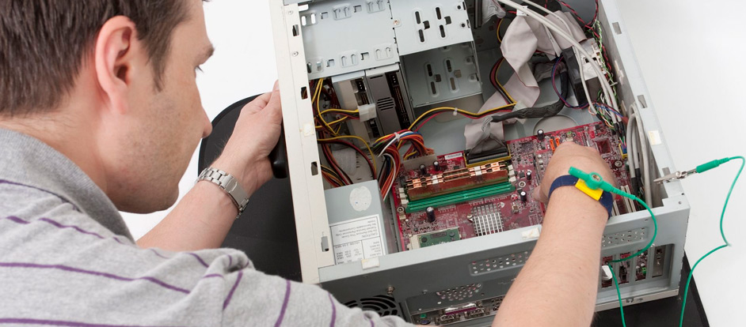
El medio ambiente que rodea al computador encuentra en él un imán de polvo;
junto a la humedad, por ejemplo, el polvo puede ser un magnífico conductor eléctrico, lo cual puede provocar pequeñas fallas en los componentes
electrónicos del equipo, asimismo, el polvo acumulado reduce la eficiencia de los ventiladores de enfriamiento
y puede actuar como un manto aislante que conserva el calor y no permite que la irradiación de éste se aleje de los componentes.
También puede ocasionar atascamiento, degradación de velocidad o ruido de los componentes mecánicos.
Beneficios de darle un mantenimiento adecuado a tu computadora
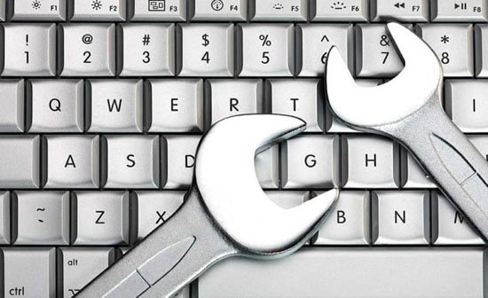
Al hacerle mantenimiento a tu ordenador estás optimizando: el tiempo de arranque, prolongándole la vida,
mejorando su capacidad y funcionamiento, entre otros beneficios.
Nosotros mismos podemos hacer cosas como mantener el lugar donde esté el ordenador
limpia o no descargar programas que no conocemos, pero a la hora de la verdad, para un soporte técnico adecuado se necesita un experto.
Contratar a un experto en computadoras es indispensable.
El experto con seguridad tiene las herramientas necesarias y programas certificados necesarios para que tu computadora esté
siempre funcionando en su máxima capacidad.
COMO DARLE MANTENIMIENTO A LA COMPUTADORA
A todos nos gusta encender el ordenador y que la pantalla
de inicio de sesión aparezca de inmediato. Introducimos usuario y contraseña, abrimos un par de programas y aparecen en pantalla
en segundos. Así da gusto.
Vaciar la papelera
Depende de los muchos archivos que elimines pero lo deseable es vaciar la Papelera una vez al mes.
Más que nada porque si la borras antes, tal vez eches en falta algún archivo que borraste antes de tiempo, en especial en tu PC de trabajo.
Antes de vaciar la Papelera no está de más mirar el contenido por si hay algo de lo que te vas a arrepentir si eliminas definitivamente.
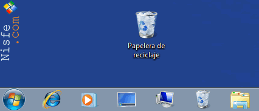
Eliminar temporales y Cache
Bien con la herramienta de Windows llamada Liberador de espacio en disco o con herramientas
de terceros como CCleaner, una vez al mes no está de más deshacernos de restos de programas y del propio sistema.
Se trata de archivos temporales y carpetas generados al instalar o desinstalar programas y juegos
o por el mero funcionamiento de Windows. Eliminarlos una vez al mes nos dará más espacio en disco y a larga aligerará el sistema.
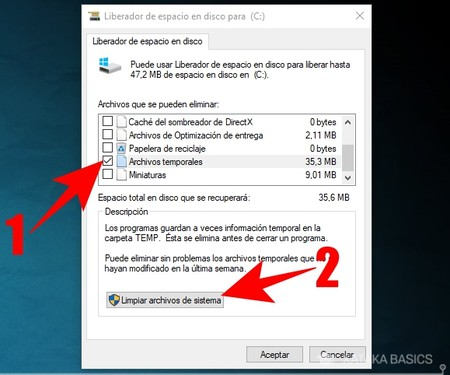
Desfragmentar el disco duro
En Windows 10, por ejemplo, la tarea de desfragmentación es automática.
En versiones anteriores, e incluso para asegurarnos en Windows 10, debemos realizar esta tarea a mano.
Con una vez al mes es más que suficiente para que el contenido de nuestro disco duro esté en buen estado.
Como recomendación, antes de esta tarea recomiendo haber realizado las dos acciones anteriores: vaciar la Papelera y eliminar temporales y cachés.
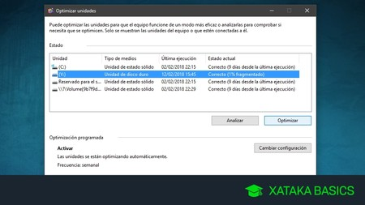
Revisar los programas de inicio
No está de más revisar esa lista una vez al mes y considerar qué programas
te conviene que se abran solos al iniciar Windows y cuales es mejor quitar de ahí.
Puedes hacerlo desde msconfig, una herramienta de Windows que puedes abrir desde la opción de Ejecutar o desde el buscador mismo.
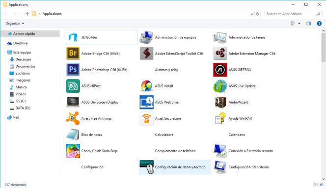
Copia de seguridad
Puedes hacer una copia de todo el sistema o simplemente de tus archivos.
Personalmente prefiero lo segundo y reinstalar Windows y demás programas en caso de problemas mayores para que estén como el primer día.
Comprobar las actualizaciones
Con una vez al mes bastará. Comprobamos las actualizaciones, las descargamos y Windows las instalará.
Así nuestra computadora será más segura y estable que antes.
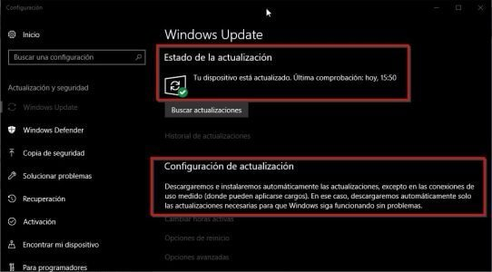
Analizar el disco en busca de un virus
Una vez al mes, para asegurarnos, deberíamos hacer un análisis a fondo
de nuestro disco duro en busca de programas dañinos, bien con nuestro antivirus por defecto o con uno adicional.
Muchas firmas de seguridad ofrecen versiones gratuitas de sus antivirus que funcionan desde el navegador web o que no requieren instalación.
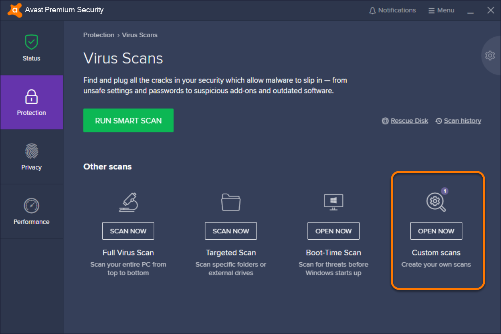v
Reiniciar la computadora
Deberías reiniciar tu portátil para que Windows “limpie” los procesos en marcha y así descargarlo
de tantas tareas al haber estado encendido tanto tiempo.
Puede ser a diario, cada semana o una vez al mes. También es recomendable apagar la computadora si no vas a usarla durante
un tiempo prolongado (un día entero, por ejemplo).
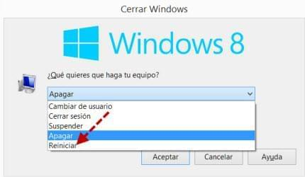
Instalacion limpia de windows
Basta con hacer una copia de seguridad de tus archivos, hacer una lista de los programas instalados y reinstalar
Windows formateando el disco en el proceso, para eliminar la instalación previa completamente.
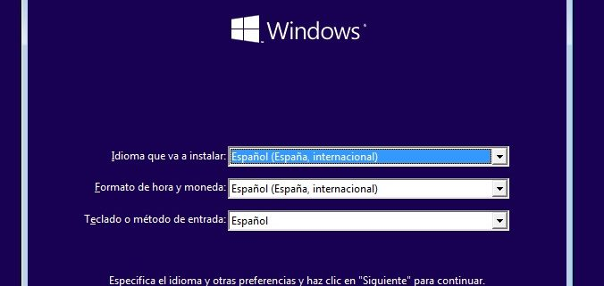
conoce mas sobre como darle mantenimiento atu computadora
ubicaciòn para que nos puedan encontrar
El mantenimiento es el procedimiento por el cual se trata un bien determinado de manera que el paso del tiempo, el uso o el cambio de circunstancias externas no lo afecten. Hay muchos campos en los que se puede aplicar el término, ya sea para bienes físicos o virtuales. Así, es posible referirse al mantenimiento de una casa, una obra de arte, un vehículo, un programa o conjunto de programas, un sistema, etc.
OBJETIVO DEL MANTENIMIENTO
OBJETIVO DEL MANTENIMIENTO
El mantenimiento se define como el conjunto de actividades que intentan compensar la degradación causada por el tiempo y el uso en equipos e instalaciones. Los departamentos de mantenimiento, teniendo en cuenta esta definición, intentan asegurar cuatro objetivos básicos: disponibilidad, fiabilidad, vida útil y coste.
*Asegurar una larga vida útil de la instalación en su conjunto, al menos de acuerdo con el período de amortización de la planta.
*Lograr todo esto dentro de un presupuesto determinado, generalmente el presupuesto de mantenimiento óptimo para esa instalación.
CONOCER MAS
CONOCER MAS
TIPOS DE MANTENIMIENTOS
TIPOS DE MANTENIMIENTOS
Tradicionalmente, se han distinguido 5 tipos de mantenimiento, que se diferencian entre sí por el carácter de las tareas que incluyen:
Mantenimiento Correctivo: Es el conjunto de tareas destinadas a corregir los defectos que se van presentando en los distintos equipos y que son comunicados al departamento de mantenimiento por los usuarios de los mismos.
Mantenimiento Preventivo: Es el mantenimiento que tiene por misión mantener un nivel de servicio determinado en los equipos, programando las intervencions de sus puntos vulnerables en el momento más oportuno. Suele tener un carácter sistemático, es decir, se interviene aunque el equipo no haya dado ningún síntoma de tener un problema.
En este video te explicamos
Mantenimiento Predictivo: Es el que persigue conocer e informar permanentemente del estado y operatividad de las instalaciones mediante el conocimiento de los valores de determinadas variables, representativas de tal estado y operatividad. Para aplicar este mantenimiento, es necesario identificar variables físicas (temperatura, vibración, consumo de energía, etc.) cuya variación sea indicativa de problemas que puedan estar apareciendo en el equipo. Es el tipo de mantenimiento más tecnológico, pues requiere de medios técnicos avanzados, y en ocasiones, de fuertes conocimientos matemáticos, físicos y/o técnicos.
Mantenimiento Cero Horas (Overhaul): Es el conjunto de tareas cuyo objetivo es revisar los equipos a intervalos programados bien antes de que aparezca ningún fallo, bien cuando la fiabilidad del equipo ha disminuido apreciablemente de manera que resulta arriesgado hacer previsiones sobre su capacidad productiva. Dicha revisión consiste en dejar el equipo a Cero horas de funcionamiento, es decir, como si el equipo fuera nuevo. En estas revisiones se sustituyen o se reparan todos los elementos sometidos a desgaste. Se pretende asegurar, con gran probabilidad un tiempo de buen funcionamiento fijado de antemano.
Mantenimiento En Uso: es el mantenimiento básico de un equipo realizado por los usuarios del mismo. Consiste en una serie de tareas elementales (tomas de datos, inspecciones visuales, limpieza, lubricación, reapriete de tornillos) para las que no es necesario una gran formación, sino tal solo un entrenamiento breve. Este tipo de mantenimiento es la base del TPM (Total Productive Maintenance, Mantenimiento Productivo Total).
LA IMPORTANCIA DEL MANTENIMIENTO DEL COMPUTADOR
LA IMPORTANCIA DEL MANTENIMIENTO DEL COMPUTADOR
Por que es importante darle mantenimiento a la computadora
Un computador debe cuidarse y mantenerse para prevenir problemas.
En un computador hay dos cosas que deben cuidarse: el hardware (la parte física) y el software
(los programas y la información que contiene). Se entiende por mantenimiento del computador al conjunto de acciones
que deben realizarse periódicamente para mantener al computador en óptimo estado de funcionamiento.
Un computador debe cuidarse y mantenerse para prevenir problemas. En un computador hay dos cosas que deben cuidarse: el hardware (la parte física) y el software (los programas y la información que contiene). Se entiende por mantenimiento del computador al conjunto de acciones que deben realizarse periódicamente para mantener al computador en óptimo estado de funcionamiento.
Mantenimiento del hardware
En general, para un buen funcionamiento del equipo se requiere ciertas condiciones ambientales que deben ser controladas. Así, el computador nunca puede estar expuesto al agua ni a una humedad excesiva. Hay que cuidarlo de las temperaturas altas y de la incidencia en él de la luz del sol de forma directa.
Mantenimiento del software
Para mantener limpio el hardware de tu computadora, en lo que se refiere al software tendrás que tener mucho cuidado cuando descargues o instales algún archivo o programa, ya que pueden entrar muchos virus en tu ordenador. Para este fin, es bueno que tengas instalado un potente antivirus. Por su parte, las actualizaciones del sistema operativo, tanto automáticas como manuales, son también muy importantes. Protegen al equipo de múltiples amenazas. Es por ello que es tan necesario permitir que se ejecuten las actualizaciones automáticas como acceder regularmente a los desarrolladores del software para verificar la existencia de actualizaciones y nuevas versiones a disposición de los usuarios.
El mantenimiento de una computadora de oficina es muy diferente a la del hogar, pero debemos tener en cuenta ciertas cosas:
1 Lo aconsejable es que el mantenimiento se haga dos veces por año (cada 6 meses).
2 El polvo es el enemigo número uno de la computadora.
3 No exponer el ordenador a rayos de sol o lugares húmedos.
4 Revisar las respectivas conexiones eléctricas.
5 Apagar el computador cuando ya no se esté usando.
6 Limpieza de ventiladores y componentes internos.
7 Limpieza de programas o archivos no deseados.
8 Usar un anti-virus legal y vigente.
¿Por qué debe limpiarse?
El medio ambiente que rodea al computador encuentra en él un imán de polvo; junto a la humedad, por ejemplo, el polvo puede ser un magnífico conductor eléctrico, lo cual puede provocar pequeñas fallas en los componentes electrónicos del equipo, asimismo, el polvo acumulado reduce la eficiencia de los ventiladores de enfriamiento y puede actuar como un manto aislante que conserva el calor y no permite que la irradiación de éste se aleje de los componentes. También puede ocasionar atascamiento, degradación de velocidad o ruido de los componentes mecánicos.
Beneficios de darle un mantenimiento adecuado a tu computadora
Al hacerle mantenimiento a tu ordenador estás optimizando: el tiempo de arranque, prolongándole la vida, mejorando su capacidad y funcionamiento, entre otros beneficios. Nosotros mismos podemos hacer cosas como mantener el lugar donde esté el ordenador limpia o no descargar programas que no conocemos, pero a la hora de la verdad, para un soporte técnico adecuado se necesita un experto.
Contratar a un experto en computadoras es indispensable. El experto con seguridad tiene las herramientas necesarias y programas certificados necesarios para que tu computadora esté siempre funcionando en su máxima capacidad.
COMO DARLE MANTENIMIENTO A LA COMPUTADORA
A todos nos gusta encender el ordenador y que la pantalla de inicio de sesión aparezca de inmediato. Introducimos usuario y contraseña, abrimos un par de programas y aparecen en pantalla en segundos. Así da gusto.
Vaciar la papelera
Depende de los muchos archivos que elimines pero lo deseable es vaciar la Papelera una vez al mes. Más que nada porque si la borras antes, tal vez eches en falta algún archivo que borraste antes de tiempo, en especial en tu PC de trabajo. Antes de vaciar la Papelera no está de más mirar el contenido por si hay algo de lo que te vas a arrepentir si eliminas definitivamente.
Eliminar temporales y Cache
Bien con la herramienta de Windows llamada Liberador de espacio en disco o con herramientas de terceros como CCleaner, una vez al mes no está de más deshacernos de restos de programas y del propio sistema. Se trata de archivos temporales y carpetas generados al instalar o desinstalar programas y juegos o por el mero funcionamiento de Windows. Eliminarlos una vez al mes nos dará más espacio en disco y a larga aligerará el sistema.
Desfragmentar el disco duro
En Windows 10, por ejemplo, la tarea de desfragmentación es automática. En versiones anteriores, e incluso para asegurarnos en Windows 10, debemos realizar esta tarea a mano. Con una vez al mes es más que suficiente para que el contenido de nuestro disco duro esté en buen estado. Como recomendación, antes de esta tarea recomiendo haber realizado las dos acciones anteriores: vaciar la Papelera y eliminar temporales y cachés.
Revisar los programas de inicio
No está de más revisar esa lista una vez al mes y considerar qué programas te conviene que se abran solos al iniciar Windows y cuales es mejor quitar de ahí. Puedes hacerlo desde msconfig, una herramienta de Windows que puedes abrir desde la opción de Ejecutar o desde el buscador mismo.
Copia de seguridad
Puedes hacer una copia de todo el sistema o simplemente de tus archivos. Personalmente prefiero lo segundo y reinstalar Windows y demás programas en caso de problemas mayores para que estén como el primer día.
Comprobar las actualizaciones
Con una vez al mes bastará. Comprobamos las actualizaciones, las descargamos y Windows las instalará. Así nuestra computadora será más segura y estable que antes.
Analizar el disco en busca de un virus
Una vez al mes, para asegurarnos, deberíamos hacer un análisis a fondo de nuestro disco duro en busca de programas dañinos, bien con nuestro antivirus por defecto o con uno adicional. Muchas firmas de seguridad ofrecen versiones gratuitas de sus antivirus que funcionan desde el navegador web o que no requieren instalación.
Reiniciar la computadora
Deberías reiniciar tu portátil para que Windows “limpie” los procesos en marcha y así descargarlo de tantas tareas al haber estado encendido tanto tiempo. Puede ser a diario, cada semana o una vez al mes. También es recomendable apagar la computadora si no vas a usarla durante un tiempo prolongado (un día entero, por ejemplo).
Instalacion limpia de windows
Basta con hacer una copia de seguridad de tus archivos, hacer una lista de los programas instalados y reinstalar Windows formateando el disco en el proceso, para eliminar la instalación previa completamente.